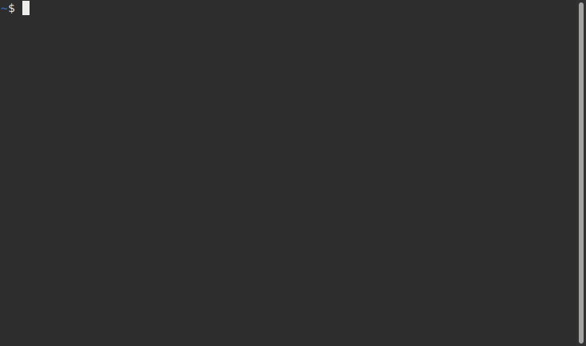
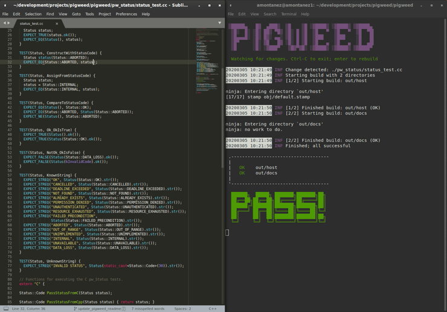
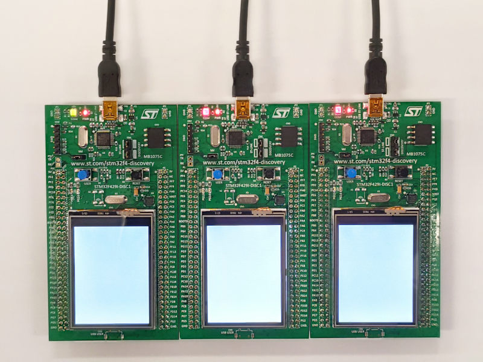

Getting Started¶
This guide will walk you through setup and general use of Pigweed. We hope to make the setup process as smooth as possible. If any of this doesn’t work, please let us know.
Express setup¶
If you’d like to skip the detailed explanations, below is the shorter version of getting setup for Pigweed. If you run into trouble, look at the more in-depth guide below, starting at Prerequisites. The express setup configures Pigweed’s watcher for three targets to give a taste of Pigweed:
Host - Mac, Linux, or Windows. Builds and runs tests
Device/STM32F429 - Build only; Optionally, the STM32F429I-DISC1 kit to follow along later in the guide to run tests directly on said device(s)
Docs - Builds the Pigweed docs
To get setup:
Make sure you have Git and Python installed and on your path.
Clone Pigweed and bootstrap the environment (compiler setup & more). Be patient, this step downloads ~1GB of LLVM, GCC, and other tooling.
$ cd ~
$ git clone https://pigweed.googlesource.com/pigweed/pigweed
...
$ cd pigweed
$ source ./bootstrap.sh
...
Configure the GN build.
$ gn gen out
Done. Made 1047 targets from 91 files in 114ms
Start the watcher. The watcher will invoke Ninja to build all the targets
$ pw watch out default
▒█████▄ █▓ ▄███▒ ▒█ ▒█ ░▓████▒ ░▓████▒ ▒▓████▄
▒█░ █░ ░█▒ ██▒ ▀█▒ ▒█░ █ ▒█ ▒█ ▀ ▒█ ▀ ▒█ ▀█▌
▒█▄▄▄█░ ░█▒ █▓░ ▄▄░ ▒█░ █ ▒█ ▒███ ▒███ ░█ █▌
▒█▀ ░█░ ▓█ █▓ ░█░ █ ▒█ ▒█ ▄ ▒█ ▄ ░█ ▄█▌
▒█ ░█░ ░▓███▀ ▒█▓▀▓█░ ░▓████▒ ░▓████▒ ▒▓████▀
20200707 17:24:06 INF Starting Pigweed build watcher
20200707 17:24:06 INF Will build [1/1]: out default
20200707 17:24:06 INF Attaching filesystem watcher to $HOME/wrk/pigweed/...
20200707 17:24:06 INF Triggering initial build...
...
Congratulations, you’re ready to go! Now take Pigweed for a spin with the below steps.
With the watcher running in a separate window, edit
pw_status/status_test.ccto make an expectation fail; for example, addEXPECT_EQ(0, 1);in a test.Save the file. Observe the watcher rebuild & retest, and fail. Restore the test if you feel like it.
Open the generated docs in
out/docs/gen/docs/html/index.htmlin your browser.Edit
docs/getting_started.md(this file!) and make any change. Save. See the watcher rebuild the docs. Reload your browser, and see the changes.
See below for equivalent Windows commands, and for more details on what each part does.
Note: After running bootstrap once, use source ./activate.sh (or
activate.bat on Windows) to re-activate the environment without
re-bootstrapping.
Prerequisites¶
Linux
Most Linux installations should work out of box, and not require any manual
installation of prerequisites beyond basics like git and build-essential.
Make sure gcc is set to gcc-8.
macOS
On macOS you may get SSL certificate errors with the system Python
installation. Run sudo pip install certifi to fix this. If you get SSL
errors with the Python from Homebrew try running the
following commands to ensure Python knows how to use OpenSSL.
brew install openssl
brew uninstall python
brew install python
To flash firmware to a STM32 Discovery development board (and run pw test)
from macOS, you will need to install OpenOCD. Install
Homebrew, then install OpenOCD with brew install openocd.
Windows
To start using Pigweed on Windows, you’ll need to install
Git and
Python (2.7 or above). We recommend
you install Git to run from the command line and third party software.
If you plan to flash devices with firmware, you’ll need to install OpenOCD and ensure it’s on your system path.
Bootstrap¶
Once you satisfied the prerequisites, you will be able to clone Pigweed and run the bootstrap that initializes the Pigweed virtual environment. The bootstrap may take several minutes to complete, so please be patient.
Linux/macOS
$ git clone https://pigweed.googlesource.com/pigweed/pigweed ~/pigweed
$ cd ~/pigweed
$ source ./bootstrap.sh
Windows
:: Run git commands from the shell you set up to use with Git during install.
> git clone https://pigweed.googlesource.com/pigweed/pigweed %HOMEPATH%\pigweed
> cd %HOMEPATH%\pigweed
> bootstrap.bat
Below is a real-time demo with roughly what you should expect to see as output:
{kind=link}
Congratulations, you are now set up to start using Pigweed!
Pigweed Environment¶
After going through the initial setup process, your current terminal will be in the Pigweed development environment that provides all the tools you should need to develop on Pigweed. If you leave that session, you can activate the environment in a new session with the following command:
Linux/macOS
$ source ./activate.sh
Windows
> activate.bat
Some major changes may require triggering the bootstrap again, so if you run into host tooling changes after a pull it may be worth re-running bootstrap.
Build Pigweed for Host¶
Pigweed’s primary build system is GN/Ninja based. There are CMake and Bazel builds in-development, but they are incomplete and don’t have feature parity with the GN build. We strongly recommend you stick to the GN build system.
GN (Generate Ninja) just does what it says on the tin; GN generates Ninja build files.
The default GN configuration generates build files that allow you to build host binaries, device binaries, and upstream documentation all in one Ninja invocation.
Run GN as seen below:
$ gn gen out
Note that out is simply the directory the build files are saved to. Unless
this directory is deleted or you desire to do a clean build, there’s no need to
run GN again; just rebuild using Ninja directly.
Now that we have build files, it’s time to build Pigweed!
Now you could manually invoke the host build using ninja -C out every
time you make a change, but that’s tedious. Instead, let’s use pw_watch.
Go ahead and start pw_watch:
$ pw watch
When pw_watch starts up, it will automatically build the directory we
generated in out. Additionally, pw_watch watches source code files for
changes, and triggers a Ninja build whenever it notices a file has been saved.
You might be surprised how much time it can save you!
With pw watch running, try modifying pw_status/public/pw_status/status.h and
watch the build re-trigger when you save the file.
See below for a demo of this in action:
{kind=link}
Running Unit Tests¶
Fun fact, you’ve been running the unit tests already! Ninja builds targeting the host automatically build and run the unit tests. Unit tests err on the side of being quiet in the success case, and only output test results when there’s a failure.
To see the a test failure, you can modify pw_status/status_test.cc to fail
by changing one of the strings in the “KnownString” test.
{kind=link}
Running tests as part of the build isn’t particularly expensive because GN caches passing tests. Each time you build, only the tests that are affected (whether directly or transitively) by the code changes since the last build will be re-built and re-run.
Try running the pw_status test manually:
$ ./out/host_{clang,gcc}_debug/obj/pw_status/test/status_test
Depending on your host OS, the compiler will default to either clang or gcc.
Building for a Device¶
A Pigweed “target” is a build configuration that includes a toolchain, default library configurations, and more to result in binaries that run natively on the target. With the default build invocation, you’re already building for a device target (the STMicroelectronics STM32F429I-DISC1) in parallel with the host build!
If you want to build JUST for the device, you can kick of watch with:
$ pw watch out stm32f429i
This is equivalent to the following Ninja invocation:
$ ninja -C out stm32f429i
Running Tests on a Device¶
While tests run automatically on the host, it takes a few more steps to get tests to run automatically on a device, too. Even though we’ve verified tests pass on the host, it’s crucial to verify the same with on-device testing. We’ve encountered some unexpected bugs that can only be found by running the unit tests directly on the device.
1. Connect Device(s)¶
Connect any number of STM32F429I-DISC1 boards to your computer using the mini USB port on the board (not the micro USB). Pigweed will automatically detect the boards and distribute the tests across the devices. More boards = faster tests! Keep in mind that you may have to make some environment specific updates to ensure you have permissions to use the USB device. For example, on Linux you may need to update your udev rules and ensure you’re in the plugdev and dialout groups.
{kind=link}
2. Launch Test Server¶
To allow Ninja to run tests on an arbitrary number of devices, Ninja will send test requests to a server running in the background. Launch the server in another window using the command below (remember, you’ll need to activate the Pigweed environment first).
$ stm32f429i_disc1_test_server
Note: If you attach or detach any more boards to your workstation you’ll need to relaunch this server.
3. Configure GN¶
We can tell GN to use the testing server by enabling a build arg specific to the stm32f429i-disc1 target.
$ gn args out
# Append this line to the file that opens in your editor to tell GN to run
# on-device unit tests.
pw_use_test_server = true
{kind=link}
Building the Documentation¶
In addition to the markdown documentation, Pigweed has a collection of
information-rich RST files that are built by the default invocation of GN. You
will find the documents at out/docs/gen/docs/html.
You can build the documentation manually by with the command below.
$ ninja -C out docs
Next steps¶
This concludes the introduction to developing with Pigweed. If you’d like to see more of what Pigweed has to offer, feel free to dive into the per-module documentation. If you run into snags along the way, please let us know!